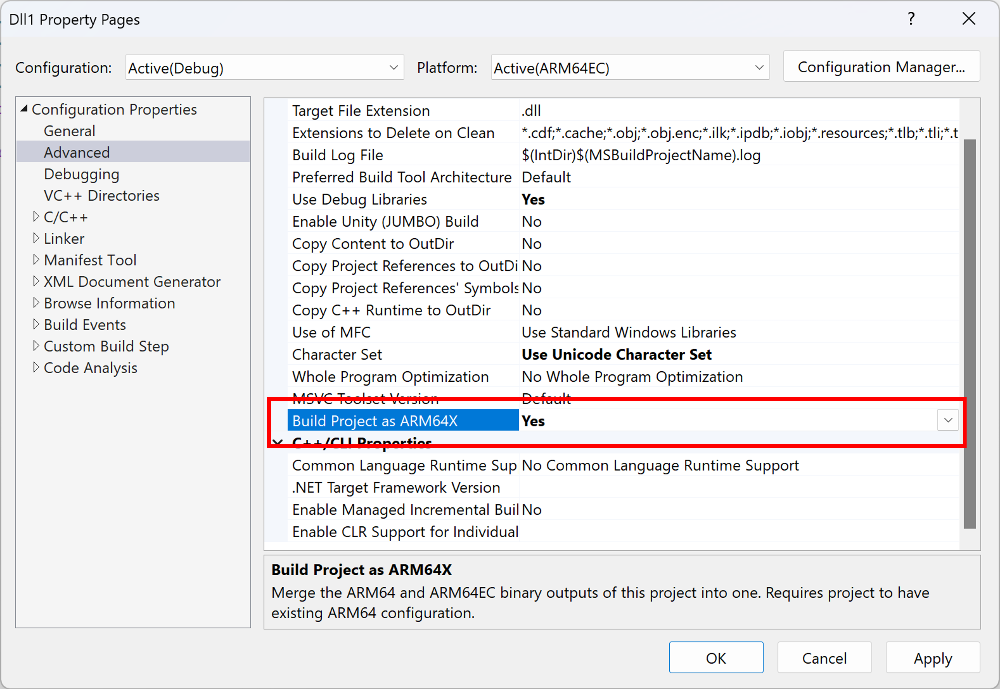

Build Arm64X binaries
You can build Arm64X binaries, also known as Arm64X PE files, to support loading a single binary into both x64/Arm64EC and Arm64 processes.
Building an Arm64X binary from a Visual Studio project
To enable building Arm64X binaries, the property pages of Arm64EC configuration has a new "Build Project as ARM64X" property, known as BuildAsX in the project file.

When a user builds a project, Visual Studio would normally compile for Arm64EC and then link the outputs into an Arm64EC binary. When BuildAsX is set to true, Visual Studio will instead compile for both Arm64EC and Arm64. The Arm64EC link step is then used to link both together into a single Arm64X binary. The output directory for this Arm64X binary will be whatever the output directory is set to under the Arm64EC configuration.
For BuildAsX to work correctly, the user must have an existing Arm64 configuration, in addition to the Arm64EC configuration. The Arm64 and Arm64EC configurations must have the same C runtime and C++ standard library (e.g., both set /MT). To avoid build inefficiencies, such as building full Arm64 projects rather than just compilation, all direct and indirect references of the project should have BuildAsX set to true.
The build system assumes that the Arm64 and Arm64EC configurations have the same name. If the Arm64 and Arm64EC configurations have different names (such as Debug|ARM64 and MyDebug|ARM64EC), you can manually edit the vcxproj or Directory.Build.props file to add an ARM64ConfigurationNameForX property to the Arm64EC configuration that provides the name of the Arm64 configuration.
If the desired Arm64X binary is a combination of two separate projects, one as Arm64 and one as Arm64EC, you can manually edit the vxcproj of the Arm64EC project to add an ARM64ProjectForX property and specify the path to the Arm64 project. The two projects must be in the same solution.
Building an Arm64X DLL with CMake
To build your CMake project binaries as Arm64X, you can use any version of CMake that supports building as Arm64EC. The process involves initially building the project targeting Arm64 to generate the Arm64 linker inputs. Subsequently, the project should be built again targeting Arm64EC, this time combining the Arm64 and Arm64EC inputs to form Arm64X binaries. The steps below leverage the use of CMakePresets.json.
Ensure you have separate configuration presets targeting Arm64 and Arm64EC. For example:
{ "version": 3, "configurePresets": [ { "name": "windows-base", "hidden": true, "binaryDir": "${sourceDir}/out/build/${presetName}", "installDir": "${sourceDir}/out/install/${presetName}", "cacheVariables": { "CMAKE_C_COMPILER": "cl.exe", "CMAKE_CXX_COMPILER": "cl.exe" }, "generator": "Visual Studio 17 2022", }, { "name": "arm64-debug", "displayName": "arm64 Debug", "inherits": "windows-base", "hidden": true, "architecture": { "value": "arm64", "strategy": "set" }, "cacheVariables": { "CMAKE_BUILD_TYPE": "Debug" } }, { "name": "arm64ec-debug", "displayName": "arm64ec Debug", "inherits": "windows-base", "hidden": true, "architecture": { "value": "arm64ec", "strategy": "set" }, "cacheVariables": { "CMAKE_BUILD_TYPE": "Debug" } } ] }Add two new configurations that inherit from the Arm64 and Arm64EC presets you have above. Set
BUILD_AS_ARM64XtoARM64ECin the config that inherits from Arm64EC andBUILD_AS_ARM64XtoARM64in the other. These variables will be used to signify that the builds from these two presets are a part of Arm64X.{ "name": "arm64-debug-x", "displayName": "arm64 Debug (arm64x)", "inherits": "arm64-debug", "cacheVariables": { "BUILD_AS_ARM64X": "ARM64" } }, { "name": "arm64ec-debug-x", "displayName": "arm64ec Debug (arm64x)", "inherits": "arm64ec-debug", "cacheVariables": { "BUILD_AS_ARM64X": "ARM64EC" } }Add a new .cmake file to your CMake project called
arm64x.cmake. Copy the snippet below into the new .cmake file.# directory where the link.rsp file generated during arm64 build will be stored set(arm64ReproDir "${CMAKE_CURRENT_SOURCE_DIR}/repros") # This function reads in the content of the rsp file outputted from arm64 build for a target. Then passes the arm64 libs, objs and def file to the linker using /machine:arm64x to combine them with the arm64ec counterparts and create an arm64x binary. function(set_arm64_dependencies n) set(REPRO_FILE "${arm64ReproDir}/${n}.rsp") file(STRINGS "${REPRO_FILE}" ARM64_OBJS REGEX obj\"$) file(STRINGS "${REPRO_FILE}" ARM64_DEF REGEX def\"$) file(STRINGS "${REPRO_FILE}" ARM64_LIBS REGEX lib\"$) string(REPLACE "\"" ";" ARM64_OBJS "${ARM64_OBJS}") string(REPLACE "\"" ";" ARM64_LIBS "${ARM64_LIBS}") string(REPLACE "\"" ";" ARM64_DEF "${ARM64_DEF}") string(REPLACE "/def:" "/defArm64Native:" ARM64_DEF "${ARM64_DEF}") target_sources(${n} PRIVATE ${ARM64_OBJS}) target_link_options(${n} PRIVATE /machine:arm64x "${ARM64_DEF}" "${ARM64_LIBS}") endfunction() # During the arm64 build, create link.rsp files that containes the absolute path to the inputs passed to the linker (objs, def files, libs). if("${BUILD_AS_ARM64X}" STREQUAL "ARM64") add_custom_target(mkdirs ALL COMMAND cmd /c (if not exist \"${arm64ReproDir}/\" mkdir \"${arm64ReproDir}\" )) foreach (n ${ARM64X_TARGETS}) add_dependencies(${n} mkdirs) # tell the linker to produce this special rsp file that has absolute paths to its inputs target_link_options(${n} PRIVATE "/LINKREPROFULLPATHRSP:${arm64ReproDir}/${n}.rsp") endforeach() # During the ARM64EC build, modify the link step appropriately to produce an arm64x binary elseif("${BUILD_AS_ARM64X}" STREQUAL "ARM64EC") foreach (n ${ARM64X_TARGETS}) set_arm64_dependencies(${n}) endforeach() endif()
/LINKREPROFULLPATHRSP is only supported if you are building using the MSVC linker from Visual Studio 17.11 or later.
If you need to use an older linker, copy the below snippet instead. This route uses an older flag /LINK_REPRO. Using the /LINK_REPRO route will result in a slower overall build time due to the copying of files and has known issues when using Ninja generator.
# directory where the link_repro directories for each arm64x target will be created during arm64 build.
set(arm64ReproDir "${CMAKE_CURRENT_SOURCE_DIR}/repros")
# This function globs the linker input files that was copied into a repro_directory for each target during arm64 build. Then it passes the arm64 libs, objs and def file to the linker using /machine:arm64x to combine them with the arm64ec counterparts and create an arm64x binary.
function(set_arm64_dependencies n)
set(ARM64_LIBS)
set(ARM64_OBJS)
set(ARM64_DEF)
set(REPRO_PATH "${arm64ReproDir}/${n}")
if(NOT EXISTS "${REPRO_PATH}")
set(REPRO_PATH "${arm64ReproDir}/${n}_temp")
endif()
file(GLOB ARM64_OBJS "${REPRO_PATH}/*.obj")
file(GLOB ARM64_DEF "${REPRO_PATH}/*.def")
file(GLOB ARM64_LIBS "${REPRO_PATH}/*.LIB")
if(NOT "${ARM64_DEF}" STREQUAL "")
set(ARM64_DEF "/defArm64Native:${ARM64_DEF}")
endif()
target_sources(${n} PRIVATE ${ARM64_OBJS})
target_link_options(${n} PRIVATE /machine:arm64x "${ARM64_DEF}" "${ARM64_LIBS}")
endfunction()
# During the arm64 build, pass the /link_repro flag to linker so it knows to copy into a directory, all the file inputs needed by the linker for arm64 build (objs, def files, libs).
# extra logic added to deal with rebuilds and avoiding overwriting directories.
if("${BUILD_AS_ARM64X}" STREQUAL "ARM64")
foreach (n ${ARM64X_TARGETS})
add_custom_target(mkdirs_${n} ALL COMMAND cmd /c (if exist \"${arm64ReproDir}/${n}_temp/\" rmdir /s /q \"${arm64ReproDir}/${n}_temp\") && mkdir \"${arm64ReproDir}/${n}_temp\" )
add_dependencies(${n} mkdirs_${n})
target_link_options(${n} PRIVATE "/LINKREPRO:${arm64ReproDir}/${n}_temp")
add_custom_target(${n}_checkRepro ALL COMMAND cmd /c if exist \"${n}_temp/*.obj\" if exist \"${n}\" rmdir /s /q \"${n}\" 2>nul && if not exist \"${n}\" ren \"${n}_temp\" \"${n}\" WORKING_DIRECTORY ${arm64ReproDir})
add_dependencies(${n}_checkRepro ${n})
endforeach()
# During the ARM64EC build, modify the link step appropriately to produce an arm64x binary
elseif("${BUILD_AS_ARM64X}" STREQUAL "ARM64EC")
foreach (n ${ARM64X_TARGETS})
set_arm64_dependencies(${n})
endforeach()
endif()
In the bottom of the top level
CMakeLists.txtfile in your project, add the snippet below. Be sure to substitute the contents of the angle brackets with actual values. This will consume thearm64x.cmakefile you just created above.if(DEFINED BUILD_AS_ARM64X) set(ARM64X_TARGETS <Targets you want to Build as ARM64X>) include("<directory location of the arm64x.cmake file>/arm64x.cmake") endif()Build your CMake project using the Arm64X enabled Arm64 preset (arm64-debug-x).
Build your CMake project using the Arm64X enabled Arm64EC preset (arm64ec-debug-x). The final dll(s) contained in output directory for this build will be Arm64X binaries.
Building an Arm64X pure forwarder DLL
An Arm64X pure forwarder DLL is a small Arm64X DLL that forwards APIs to separate DLLs depending on their type:
Arm64 APIs are forwarded to an Arm64 DLL.
x64 APIs are forwarded to an x64 or Arm64EC DLL.
An Arm64X pure forwarder enables the advantages of using an Arm64X binary even if there are challenges with building a merged Arm64X binary containing all of the Arm64EC and Arm64 code. Learn more about Arm64X pure forwarder DLLs in the Arm64X PE files overview page.
You can build an Arm64X pure forwarder from the Arm64 developer command prompt following the steps below. The resulting Arm64X pure forwarder will route x64 calls to foo_x64.DLL and Arm64 calls to foo_arm64.DLL.
Create empty
OBJfiles that will later be used by the linker to create the pure forwarder. These are empty as the pure forwarder has no code in it. To do this, create an empty file. For the example below, we named the file empty.cpp. EmptyOBJfiles are then created usingcl, with one for Arm64 (empty_arm64.obj) and one for Arm64EC (empty_x64.obj):cl /c /Foempty_arm64.obj empty.cpp cl /c /arm64EC /Foempty_x64.obj empty.cppIf the error message "cl : Command line warning D9002 : ignoring unknown option '-arm64EC'" appears, the incorrect compiler is being used. To resolve that please switch to the Arm64 Developer Command Prompt.
Create
DEFfiles for both x64 and Arm64. These files enumerate all of the API exports of the DLL and points the loader to the name of the DLL that can fulfill those API calls.foo_x64.def:EXPORTS MyAPI1 = foo_x64.MyAPI1 MyAPI2 = foo_x64.MyAPI2foo_arm64.def:EXPORTS MyAPI1 = foo_arm64.MyAPI1 MyAPI2 = foo_arm64.MyAPI2You can then use
linkto createLIBimport files for both x64 and Arm64:link /lib /machine:x64 /def:foo_x64.def /out:foo_x64.lib link /lib /machine:arm64 /def:foo_arm64.def /out:foo_arm64.libLink the empty
OBJand importLIBfiles using the flag/MACHINE:ARM64Xto produce the Arm6X pure forwarder DLL:link /dll /noentry /machine:arm64x /defArm64Native:foo_arm64.def /def:foo_x64.def empty_arm64.obj empty_x64.obj /out:foo.dll foo_arm64.lib foo_x64.lib
The resulting foo.dll can be loaded into either an Arm64 or an x64/Arm64EC process. When an Arm64 process loads foo.dll, the operating system will immediately load foo_arm64.dll in its place and any API calls will be handled by foo_arm64.dll.